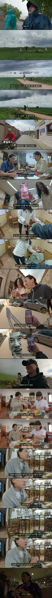
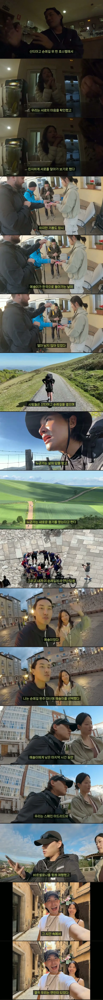

시발 순례하랬지 순애 하랬냐 !!
확실히 여행지에서 여자 만나면 같이 다니자고 ㅈㄴ 엉겨붙긴 하더라
뭣 그럴리가없..
개체값 공유좀
진짜 뭔 말만해도 웃어줌.. 서울을 한양이라고 해도 터짐
캐릭터 생성할때 커마를 잘했나보네ㅋㅋㅋ
아 지랄났네
지랄하고있네
선남선녀네
예솔씨를 처음 본 순간
진지하게 서로를 알아간다는게 간첩인지 싹 스캔 돌린다는 의미인가
똑똑한청년
개병신주작글 ㅋㅋ
(이어야만 해! ㅠㅠ)

퍼리퍼리야